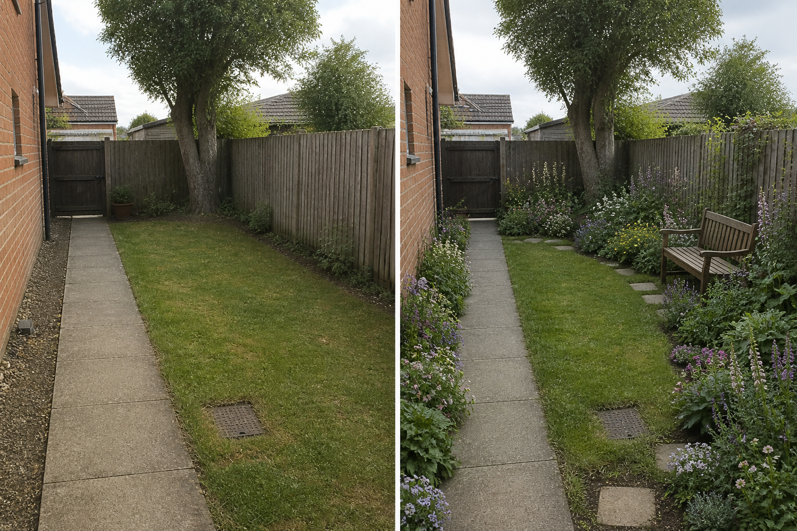

Keep the main path plain
The existing direct route provides visual relief and dependable access through fuller borders.
A cottage-garden direction works best when a simple path, a few repeated planting groups, maintenance access, and one quiet seat organize the visual abundance. Plant choice comes after local conditions and realistic upkeep are understood.
Editorially reviewed August 14, 2026.
This AI-generated comparison is visual inspiration, not a measured plan, specification, safety assessment, cost estimate, local approval, plant recommendation, or construction guarantee.

The existing direct route provides visual relief and dependable access through fuller borders.
Recurring foliage and flower-like masses create continuity without specifying a plant list.
A movable bench adds a pause while leaving the gate, path, drain, and maintenance points clear.
The concept keeps the path, gate, house wall, fence, mature tree, lawn, drain, levels, and boundaries. It does not identify species, promise flowering seasons, claim low maintenance, or attach climbers and structures.
Record doors, gates, paths, furniture movement, utilities, drains, roots, and maintenance access. Do not infer clearance from the image.
Note direct sun, shade, wind, overlooking, and views from inside across more than one time and season before choosing materials or plants.
Locate falls, low points, downpipes, drains, and recurring wet areas. Preserve existing outlets and seek appropriate advice before changing runoff or levels.
Check permissions, product information, plant suitability, mature size, toxicity, invasiveness, upkeep, and any safety requirements for the actual site.
Avoid confusing density with crowding, choosing by flower image alone, losing maintenance access, hiding drains, attaching climbers without checks, or claiming a cottage garden is automatically easy care. Stop for toxic or invasive plants, structural supports, tree roots, irrigation, drainage, boundary work, or uncertain local suitability.
A simple underlying route and repeated planting structure keep an informal, layered display readable and maintainable.
Do not assume so. Upkeep depends on the plant palette, density, staking, pruning, watering, self-seeding, pests, and local growing conditions.
Verify climate, soil, light, water, mature size, toxicity, invasiveness, and maintenance with reliable local sources before selecting species.
Upload a level, wide photo to compare restrained concepts before making physical changes.
AI-generated visualizations are concepts. Verify measurements, conditions, drainage, access, structure, utilities, local rules, product information, plant suitability, and professional requirements before buying or building.